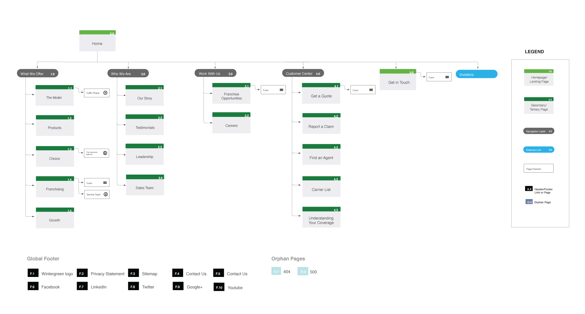

Goosehead · Case Study
Overview
Insurance is a category built on complexity. Policies, pricing structures, and coverage models create decision fatigue before a customer even gets to a quote. Most insurance websites make this worse — they bury the value proposition under jargon and force users to work for information they should be handed immediately.
Goosehead was rethinking how insurance should work for clients — clearer, more transparent, less opaque. Giving clients clearer visibility into services, pricing, and value.
There was a gap between what the business was becoming and what the website was communicating. The digital experience wasn’t reflecting the shift in the model.
Approach
The opportunity was clarity — not simplification for its own sake, but precision about what Goosehead actually does and why it’s different. I partnered with stakeholders, developers, and customers to align on three things before design began.
What the model actually was and how to explain it without industry jargon — legible within the first scroll.
Where users were losing confidence or dropping off — what was preventing them from moving forward.
What the information architecture needed to do to close the gap between what users needed to understand and what they were finding.
The IA work came first. Getting the content hierarchy right — what a user needed to understand, in what order, to feel confident moving forward — determined everything that followed.

Design
Insurance interfaces tend to over-explain. The instinct is to add more — more copy, more features, more reassurance. The better call was to remove.
Clarified the service model so the value proposition was legible within the first scroll — no hunting required.
Pricing and coverage logic surfaced early rather than buried in fine print — built into the architecture, not added as an afterthought.
Guided decision-making by revealing information at the right moment — rather than presenting everything at once and creating overwhelm.
Outcome
The result wasn’t just a functional website. It was a clearer expression of what Goosehead was becoming — a brand that trusted its customers to make good decisions when given good information.
Architecture restructured around how users build confidence — right information, right order.
Model explained plainly and surfaced immediately — no jargon, no buried feature lists.
Interaction patterns designed for the roadmap, not just the launch — built to absorb future growth.
Closed the gap between business model and experience — where trust is the only differentiator that matters.